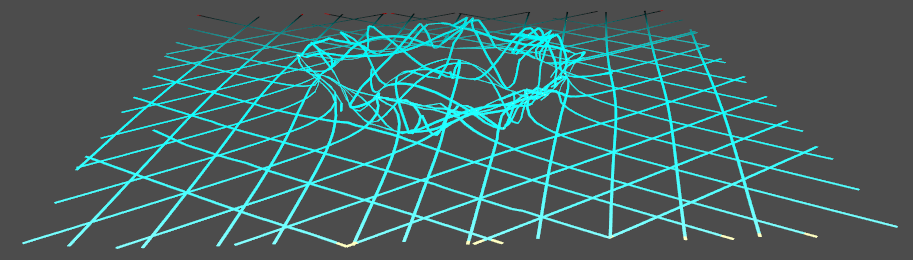
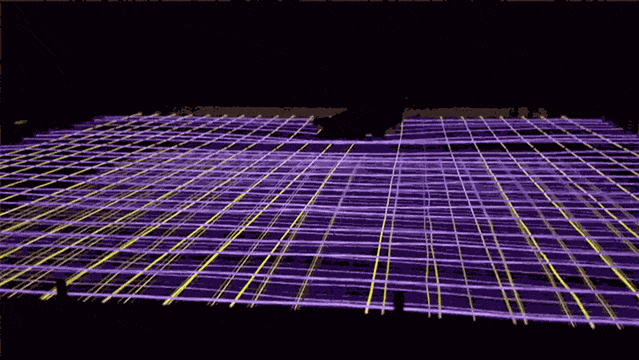
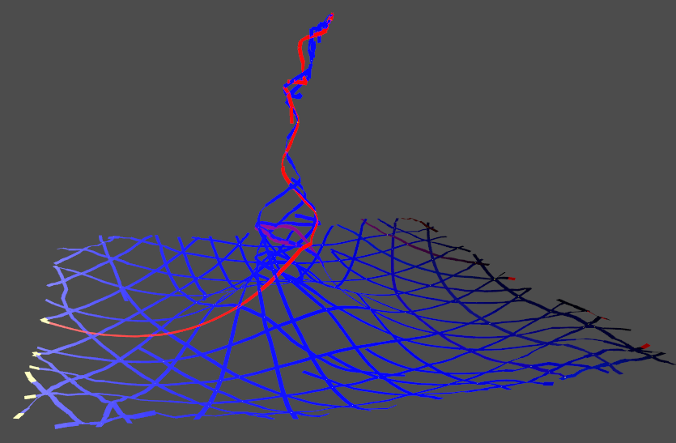
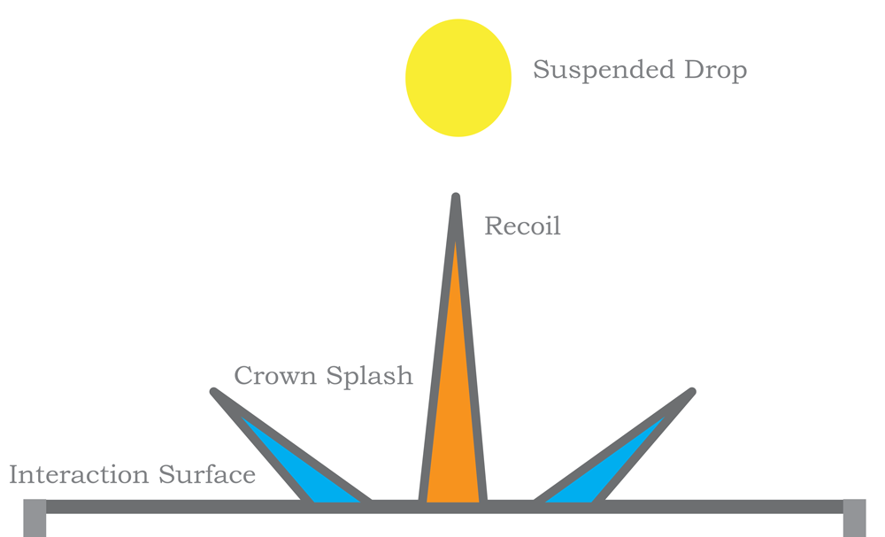
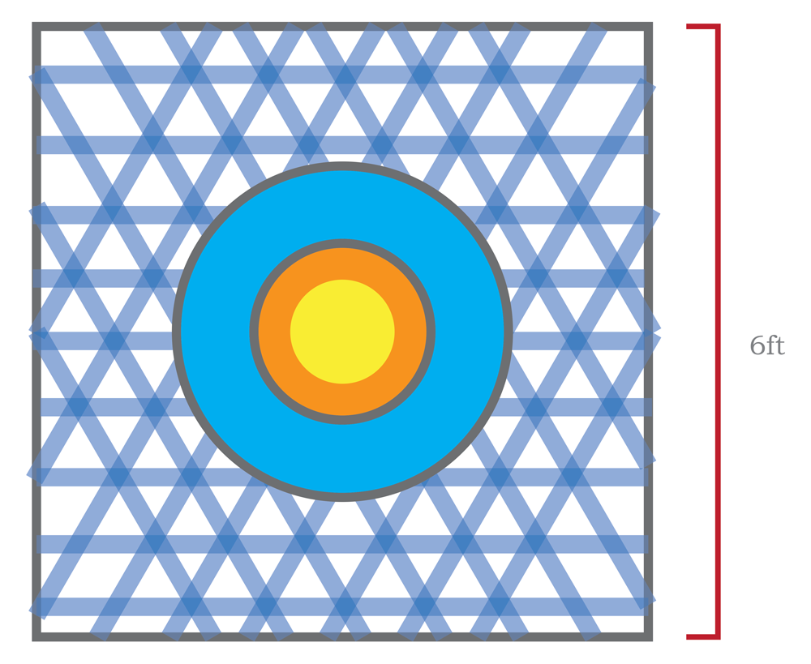

Preface
This is an in progress installation proposal. We have been developing it to explore the possibilities of the weaving design software we've created.
The current iteration is light based and interactive.
During our residency, we plan to build on the ideas presented below to develop an immersive installation showcasing our volumetric tapestry - whose shape transformation will be enabled by Jacquard fibers from Google.
Woven Ripples

In this installation we weave a structure out of light emitting ribbon. Its form evokes a drop of water hitting a still pond.

Here we have a ripple, rendered in houdini, whose shape we will fabricate as several slices in time.

We plan to make our installation interactive in a manner similar to our "Light Harp", which debuted at SIGGRAPH 2017, where touch triggered responses through light and sound to engage participants.

The goal of our installation is to provide a meditative space to retreat to the fundamental.
Schematics

This installation will rest on a low 6x6 foot table, in a dark environment and will respond to interaction by modulating light and sound.

The weaving patterns and corresponding fabrication instructions are generated by a novel software package. This was developed over the course of the past year as part of an interdisciplinary research project at the intersection of geometry processing and textile design. The light emitting ribbons are made of Electro-Luminescent (EL) material, and are controlled by 'Whoa Board's, hardware that we designed and manufactured ourselves.
Click here to see some examples of past work